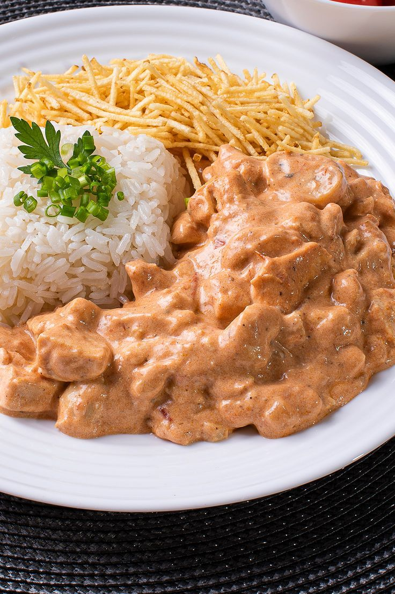

Strogonoff

Description
This rich and creamy strogonoff recipe is super simple to prepare, ready
to serve in under 30 minutes making it a great choice for busy weeknights.
Ingredients
- 600g / 1.2 lb chicken thighs (4 - 5)
- 1 tsp garlic powder
- Salt and pepper
- 1 tbsp olive oil
- 1 large onion
- 300g / 10oz mushrooms
- 40g / 3 tbsp butter
- 2 tbsp flour
- 2 cups / 500 ml beef broth/stock
- 1 tbsp Dijon mustard
- 2/3 cup (150g) sour cream
- 250 - 300 g / 8 - 10 oz pasta or egg noodles of choice
- Chopped parsley or chives
Steps
-
Sprinkle chicken with garlic powder, salt and pepper on both sides.
-
Heat oil in a large skillet over medium heat. Place chicken in skillet smooth side down.
-
Press down lightly with with spatula. Cook for 4 minutes until golden.
-
Turn and press lightly with spatula. Cook for 2 minutes.
-
Remove chicken onto a plate.
-
Turn heat down to medium high. Add butter, melt. Then add onions, cook for 1 minute, then add mushrooms.
-
Cook mushrooms until golden. Scrape bottom of fry pan to get all the golden bits off (this is flavour!).
-
Add flour, cook, stirring, for 1 minute.
-
Add half the broth while stirring. Once incorporated, add remaining broth.
-
Stir, then add sour cream and mustard.
Stir until incorporated (don't worry if it looks split, sour cream will "melt" as it heats).
-
Bring to simmer ,then reduce heat to medium low.
Once it thickens to the consistency of pouring cream (3 minutes),
adjust salt and pepper to taste.
-
Add chicken back in (including plate juices). Simmer for 1 minute, then remove from stove.
-
Serve over pasta or egg noodles, sprinkled with parsley or chives if desired.